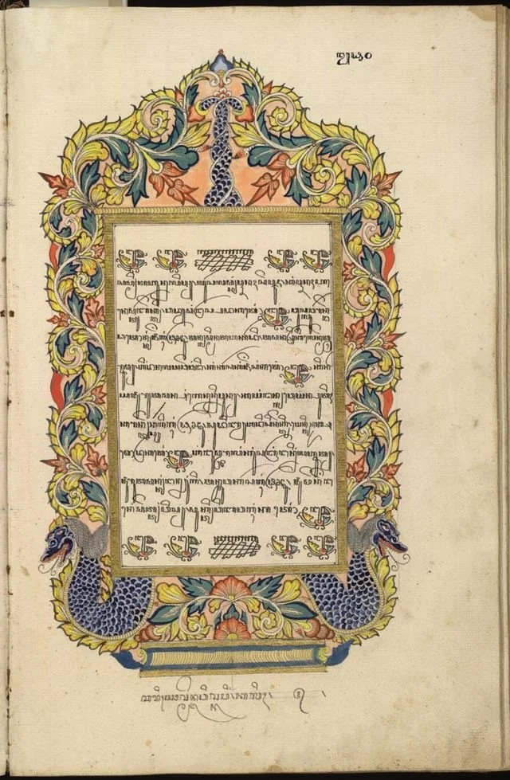
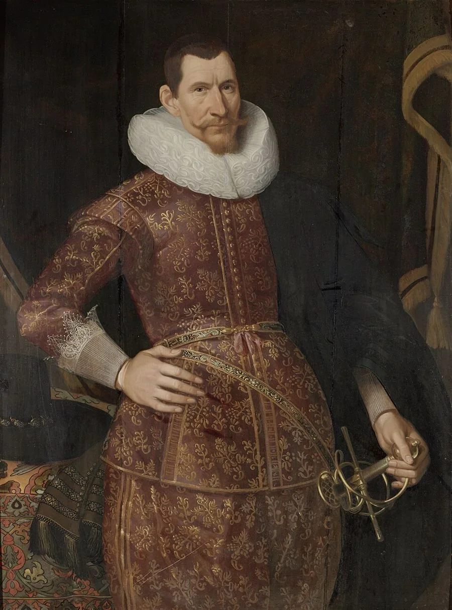
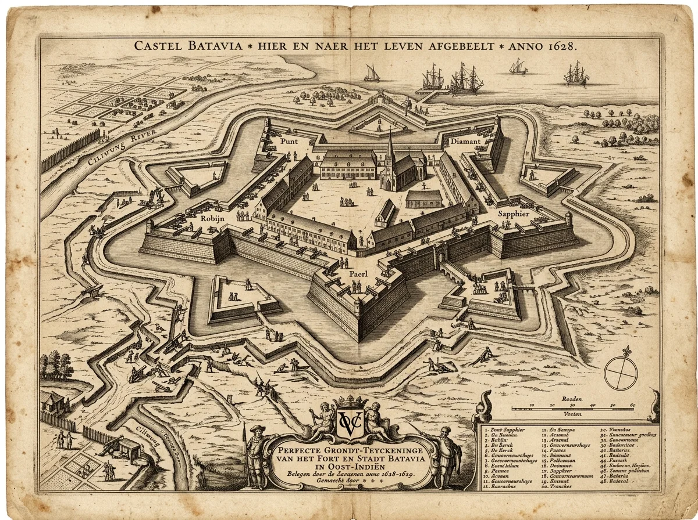
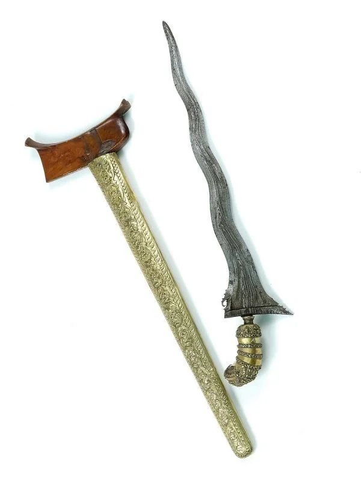
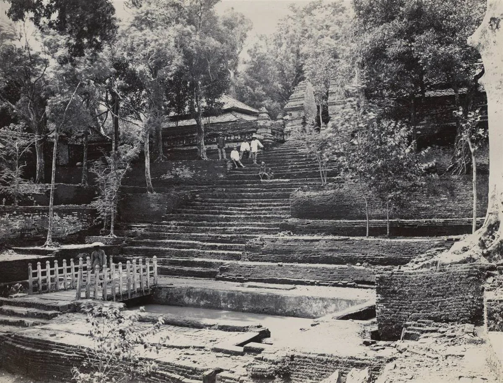

Sultan Agung dan Pengepungan Batavia
Dua kali Kesultanan Mataram mengerahkan puluhan ribu prajurit menyeberangi Pulau Jawa untuk menantang monopoli VOC. Jelajahi strategi logistik, peta militer, drama kepungan, dan warisan kebudayaan yang abadi.

Sengkalan memet dan iluminasi lung-lungan gaya pesisiran mencatat titah penggalangan bala tentara Mataram ke Batavia.
Peta Pergerakan Ekspedisi: Karta Menuju Batavia
Pilih titik komando di bawah untuk membaca taktik penyusupan, pembuatan lumbung pangan rahasia, dan manuver pengepungan kastel VOC.
Keraton Karta: Perumusan Titah Sumpah Pasukan
Di keraton ini Sultan Agung memerintahkan Tumenggung Bahureksa mengumpulkan 10.000 prajurit infanteri dan kavaleri. Sumpah kepatuhan diikrarkan di hadapan alun-alun sebelum berbaris menuju utara Jawa.
Empat Babak Epik Perjuangan dan Warisan
Pilihlah portal babak di bawah untuk membaca telaah mendalam arsip primer, analisis pertempuran benteng, dan artefak bersejarah abad ke-17.

Latar Belakang dan Tokoh Kunci
Pertarungan dua visi: Penyatuan seluruh Tanah Jawa di bawah panji Sultan Agung berbenturan dengan monopoli dagang VOC di bawah kendali dingin Jan Pieterszoon Coen.

Dua Pengepungan (1628–1629)
Rekonstruksi taktik penggalian parit mendekati dinding benteng Batavia, perang biologi tinja (Kota Tahi), sabotase lumbung padi oleh mata-mata VOC, hingga wafatnya Coen.

Warisan dan Artefak Bersejarah
Melampaui kancah perang: penciptaan Kalender Jawa (Anno Javanico), penulisan adiluhung Sastra Gendhing, pusaka tosan aji, dan pemakaman Imogiri.

Uji dan Simulasi Keputusan
Uji kemampuan strategi Anda: ambil keputusan genting menghadapi pasokan beras yang dibakar, tembakan meriam kaliber berat, lalu raih Sertifikat Sejarawan Digital.
“Ora kena wong Landa iku ngadeg ana ing tanah Jawa, awit bakal ngrusak tatanan lan ngendhemi martabat bangsa.”
— Petikan amanat Sri Sultan Agung kepada para Tumenggung dalam Serat Nitik Sultan Agung menjelang mobilisasi 1628.
“Het schijnt dat de Koning van Mataram met zulk een ontzagwekkende menigte gekomen is om ons geheel van de aardbodem te verdelgen.”
— Daghregister gehouden int Casteel Batavia, catatan juru tulis pos pertahanan bastion Hollandia, September 1629.
Glosarium dan Fakta Kunci
Klik istilah terminologi berikut untuk memahami kosakata tata kelola Mataram dan taktik perbentengan Belanda.
Catur Gatra Tunggal
Konsep tata ruang sakral Mataram yang menyatukan empat pilar utama dalam satu sumbu spasial: Keraton (pusat kekuasaan raja), Alun-alun (ruang komunikasi publik), Masjid Gedhe (kehidupan spiritual-keagamaan), dan Pasar (pusat denyut roda ekonomi rakyat). Konsep ini dibawa dan dipertahankan dalam merancang kota-kota satelit selama ekspedisi.
Ingin Menggunakan Arsip Ini dalam Kelas Sejarah?
Tersedia lembar kerja siswa, transliterasi huruf pegon, denah benteng VOC resolusi tinggi, serta panduan refleksi kritis peran Sultan Agung.